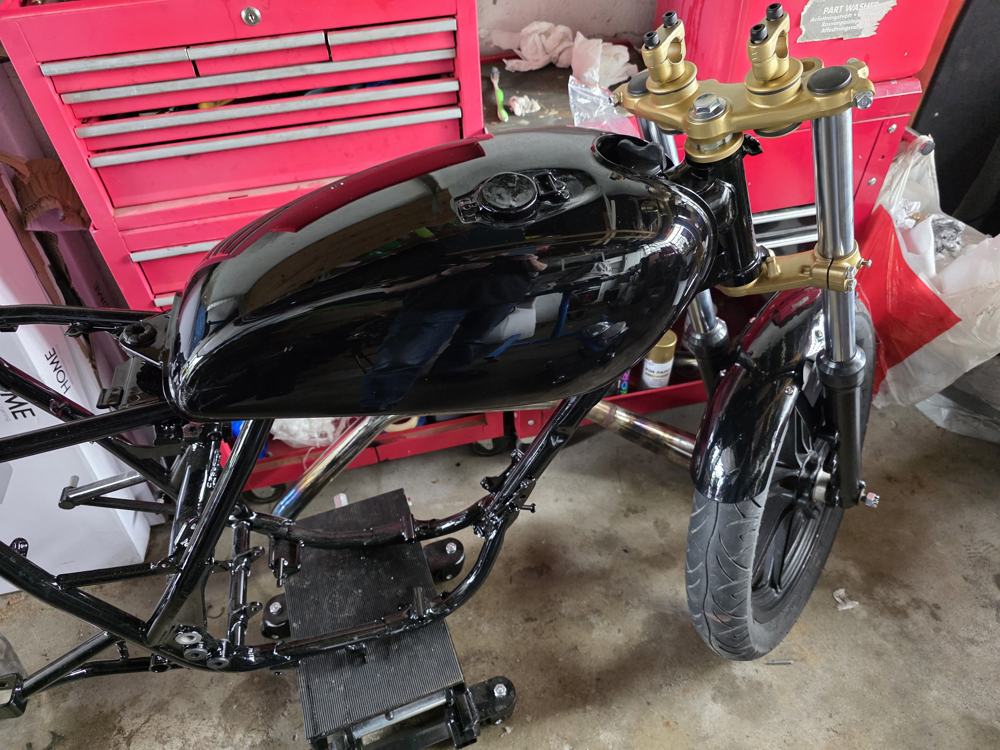
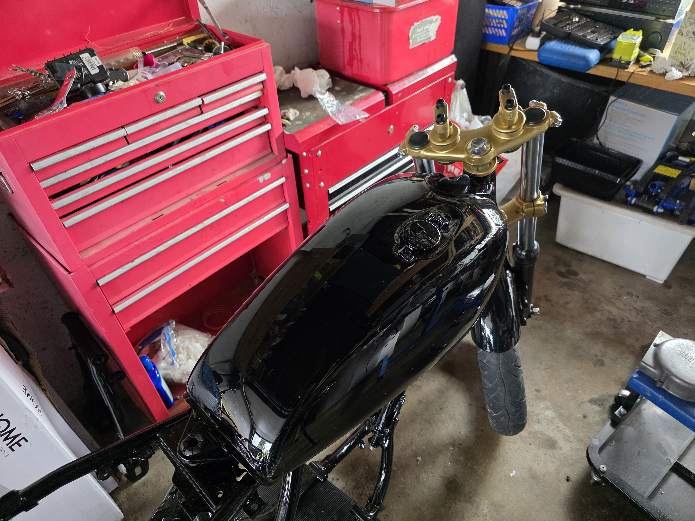
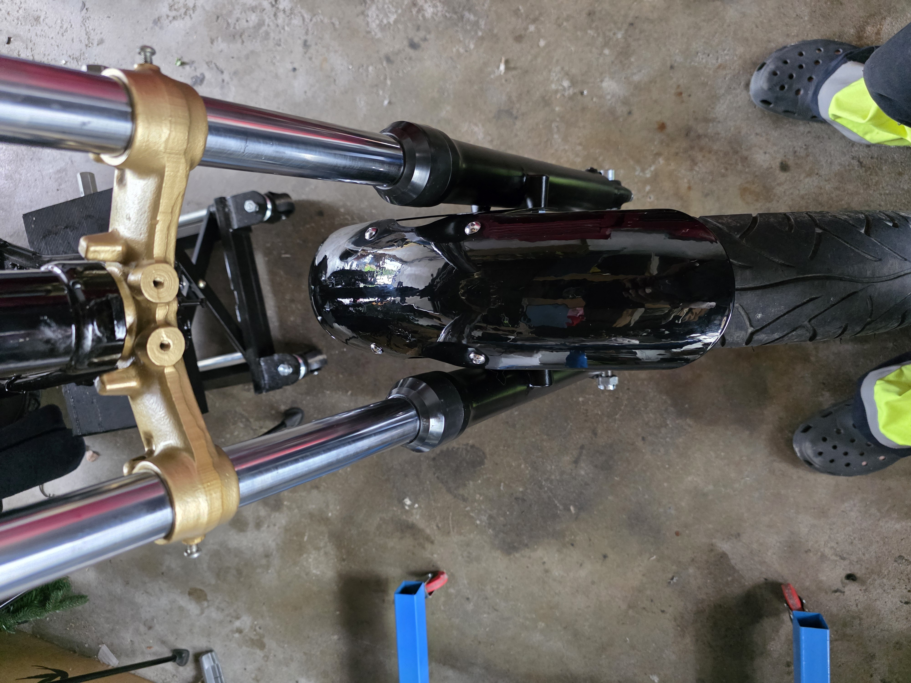
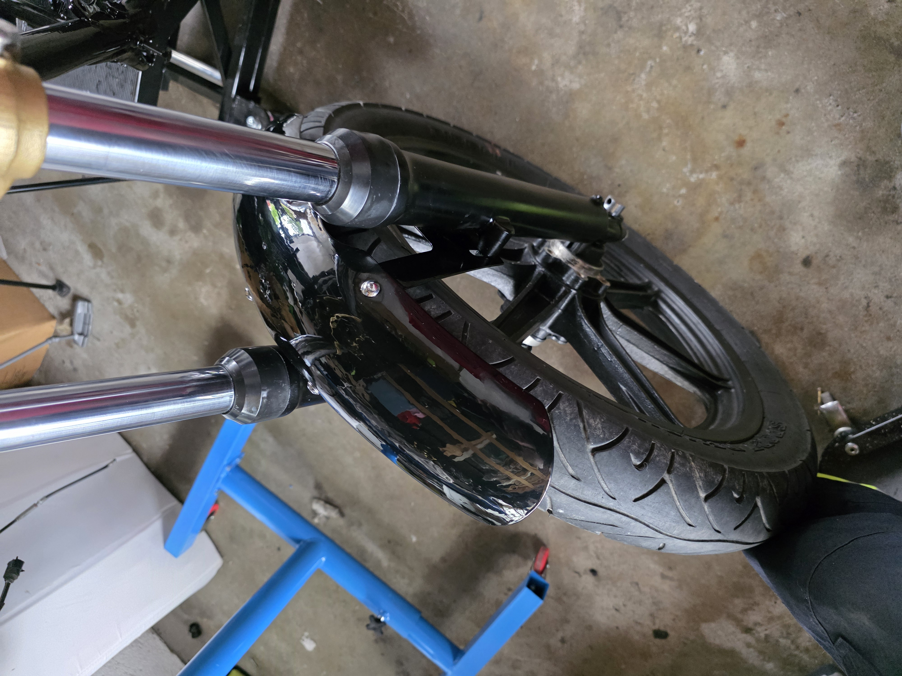

🎨 Tanken er endelig hjemme
Det er ikke ofte man blir så glad i å bære inn en tank. Men da jeg henta den hos lakkeringen 3. juli, var det akkurat sånn det føltes. Etter uker med glassblåsing og lakk — der er den. Sort, glatt, helt ny.

Ramme, svingarm og nå tank — alle har fått ny drakt. Det begynner å ligne noe. Det er lov å kjenne at prosjektet går fremover selv om det fortsatt er en lang vei å gå. Noen ganger er det de små milepælene som betyr mest.

📦 Pakkebonanza
Akkurat før tanken kom hjem, landet det en skikkelig bunke med deler på døra samme dag: flensbolter og klembolter til bremseskiva, lager og simringer til forhjulet, svinghjulsavdrageren som skal brukes når den nye tenninga skal monteres, og selvfølgelig MotoGadget-pakka som fikk sin egen omtale sist.

Det er noe eget med å åpne pakker som har reist fra Nederland, Tyskland, Storbritannia og USA — og plutselig ligge på kjøkkenbordet samme dag. Prosjektet har på en måte sitt eget lille globale forsyningsnettverk.

🔧 Veien videre
Nå venter den store jobben: VAPE-tenninga skal monteres, svinghjulet må av, og det nye eldnettet med MotoGadget mo.unit blue skal bygges opp fra bunnen av. Det blir den største elektriske utfordringen i prosjektet så langt — men også den mest givende.
Og når alt det er på plass... da skal tanken endelig på ramma der den hører hjemme.
Gleder meg! 🔧🏍️